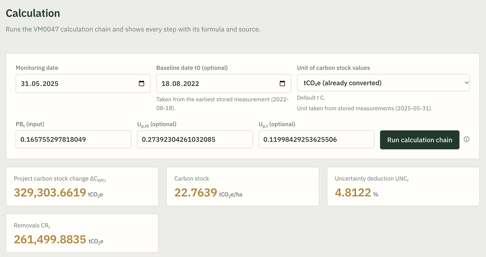
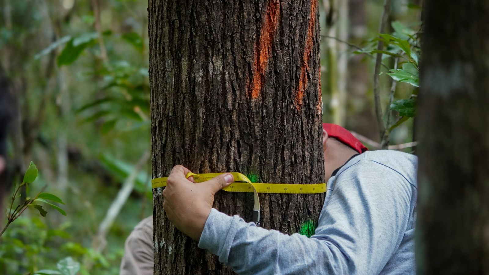
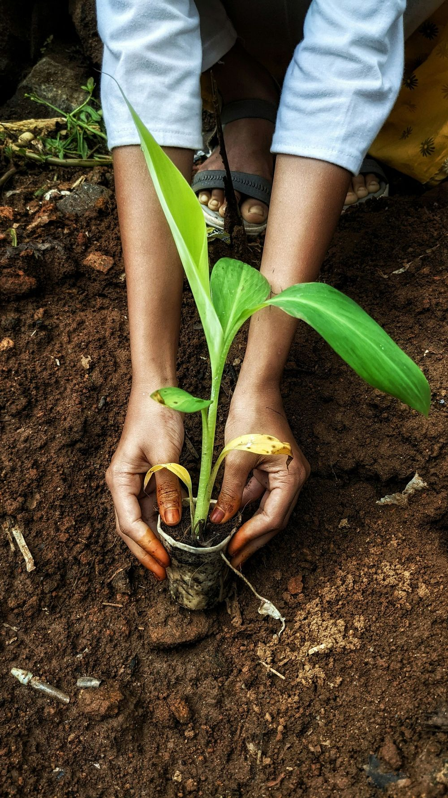
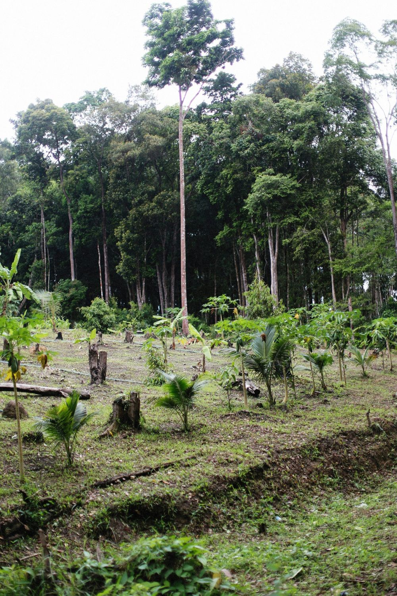
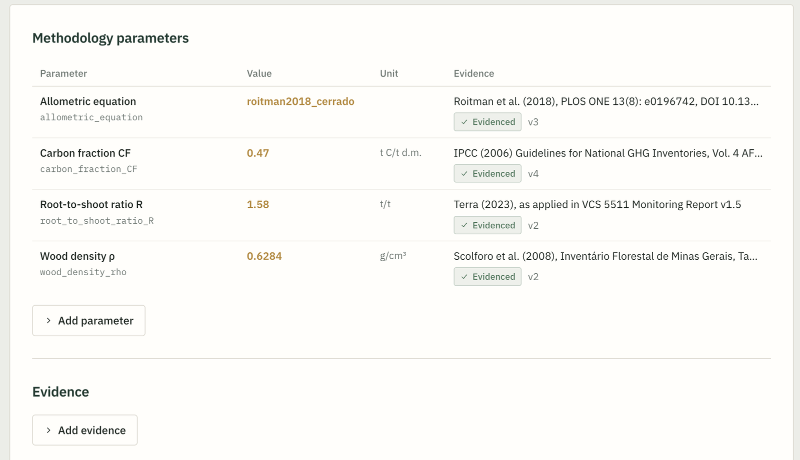
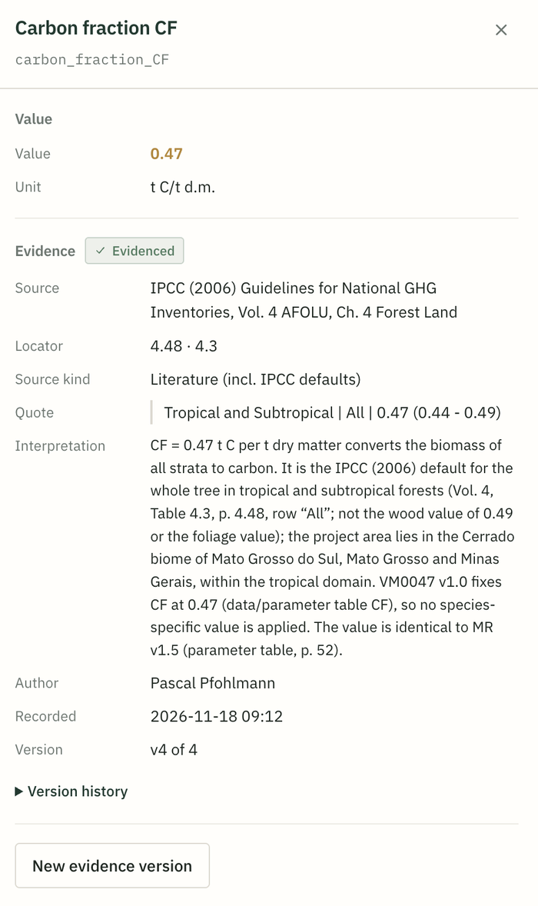
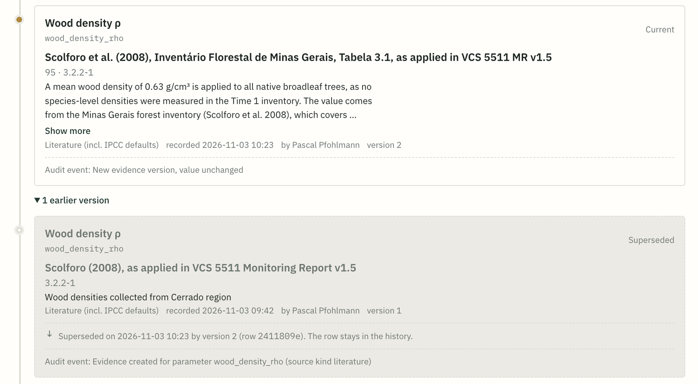

Audit-proof MRV for ARR projects
Every number sourced. Every decision traceable.
ForestVerify runs your inventory data through the methodology to the creditable removals and documents every parameter choice, so your verifier can follow each step with fewer findings rounds.




The problem
The calculation is rarely the problem. Its justification is.
01
Everyone calculates differently
Every developer has their own calculation workbook. Which formula and which value sit where is hard for verifiers to trace.
02
Values without origin
Wood densities and biomass functions are carried over from report to report without anyone checking whether they fit the species and region.
03
Costly queries
Findings rounds with the verifier take from one week to several months. When the responsible person leaves, the reasoning behind the calculation leaves too.
Basis: interviews with developers, consultants and Verra, October and November 2026
How it works
From the plot measurement to the creditable removals
The calculation follows the methodology step by step. For every intermediate value you see the equation used and the evidence behind each input.
01
Plot data
Species, diameter, height per tree and plot
02
Biomass
Allometry, wood density, root-to-shoot ratio
03
Carbon
Carbon fraction, conversion to CO₂e
04
Deductions
Benchmark, uncertainty, leakage, buffer
05
Removals
Creditable, after all deductions
Every step rests on evidence
Source reference · Original wording · Justification · Author · Version
Benchmark and leakage enter as documented inputs.
Document
No justification, no saving.
Every value in the calculation points to where it comes from and why it was chosen. The calculation is deterministic and open, so there is no black box.
- Each parameter carries its exact source, the original wording and a written reason
- A value without evidence cannot be saved
- Justifications are written by a person, not generated



Log
Nothing is overwritten.
Every change becomes a new version. The earlier one stays in the history, so your verifier sees the full path to today's numbers.
- Every change is recorded: who, when, why
- Superseded evidence remains visible next to the current version
- Decisions outlast any change in staff, even years later
The proof · Brazil Cerrado 1, VCS 5511
Two sections tested against a registered Verra project. Both match exactly.
Tree → Plot → Per hectare
19.7225tCO₂e/ha
From 443 individual trees in 111 plots to the hectare value of the native stratum.
Deviation from the workbook: 0.00 %Stock → Deductions → VCUs
- Gross removals
- 261,500 tCO₂e
- minus buffer pool (12 %)
- − 31,380
230,120net VCUs
From total stocks via stock change, uncertainty, benchmark and vintages to the gross removals; after the buffer, the net VCUs for the whole project. ForestVerify unrounded: 261,499.88 and 230,119.90 tCO₂e.
Deviation from the verification report: 0.00 %Section 1: live biomass, Time-1 inventory; reference is the public workbook version V01.
Section 2: starts from the workbook's total stocks; reference figures from the AENOR verification report; 1 VCU = 1 tCO₂e. Connecting both sections for all strata is in progress.
Positioning
The gap ForestVerify closes
| Common today | Strength | Weakness |
|---|---|---|
| Excel template or own workbook | Flexible, free | Every file different, origin of values unclear, verifiers recalculate by hand |
| Consulting firm | Experience, full service | Costly per report; the calculation and the knowledge stay with the consultant |
| dMRV and remote sensing | Large areas, fast | No documented calculation chain from plot data to credit |
ForestVerify
Open, documented, logged
Audit-ready in-house and neutral for every verifier. It complements existing dMRV instead of replacing it.
Remote sensing shows how much biomass stands on the land. ForestVerify shows why the number in the report is right.
Pilot
One project, three months
ForestVerify maps your project together with your team and calculates it in parallel to your existing workbook, with every deviation explained.
Weeks 1 to 2
Map the calculation logic
Configure methodology, carbon pools, biomass functions and factors for your project.
Weeks 3 to 8
Calculate in parallel
Run your inventory data and document every parameter choice with source and justification.
Weeks 9 to 12
Hand over the evidence package
Audit-ready documents for your verifier and a reconciliation with your existing calculation.
You bring
Inventory data for one project, a contact person and, after a successful pilot, a reference.
You get
Evidence package, reconciliation with your calculation and direct influence on development.
Terms
€1,500
for the full three-month pilot, then 50 % off the first annual subscription.
Test ForestVerify on one of your projects.
Pascal Pfohlmann
Founder ForestVerify · Forest Carbon Specialist